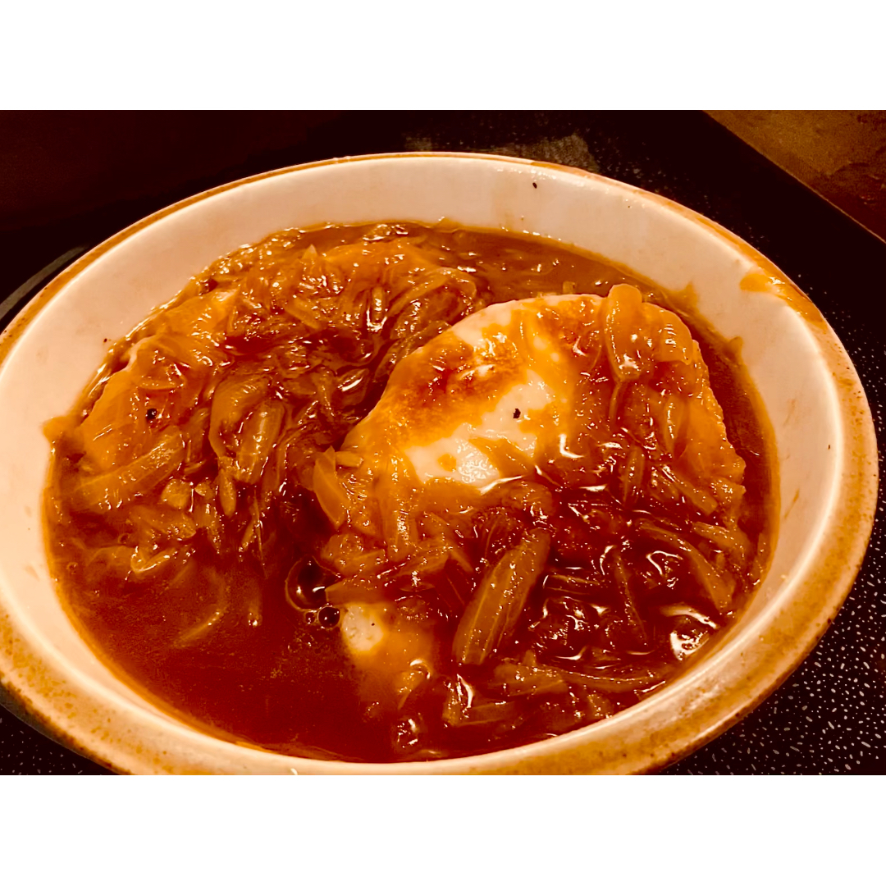

French Onion Soup

Description
This soup is pretty good. Very simple, but just as decadent. It is somewhat labor intensive, but after your
shoulder and eyes ache from cutting a large batch of onions, this soup will heal you.
Ingredients
- Yellow Onions, 3lb
- Leek, 1
- Shallot, 1
- Beef stock, like a cup or 2
- White wine, 1/2 cup
- French Bread, 1 loaf
- White cheese, enough to cover bread
Steps
- chop
- caramelize
- deglaze
- simmer